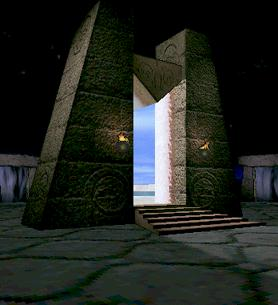

TECHNOLOGY
|

A distinguishing characteristic of Mirage is its many gates linking the various worlds together. Gates are like wormholes in reality, connecting arbitrary worlds. This unique technology allows dramatic surrealistic juxtaposition of multiple worlds, combining disparate environments and architectural styles. Unlike other 3D engines, the Bäcchus engine shows multiple environments simultaneously and interactively. It does not compartmentalize the universe into separate levels, preventing the adventurer from seeing what is around the corner or down the hall. The player is never forced to sit, twiddling thumbs waiting for the next scene to load when moving from one level to another. When you look through a gate, you simply see the world on the other side, moving correctly as your perspective shifts, just as in real life. This gate technology also allows creation of puzzles unlike those seen in any other game. |